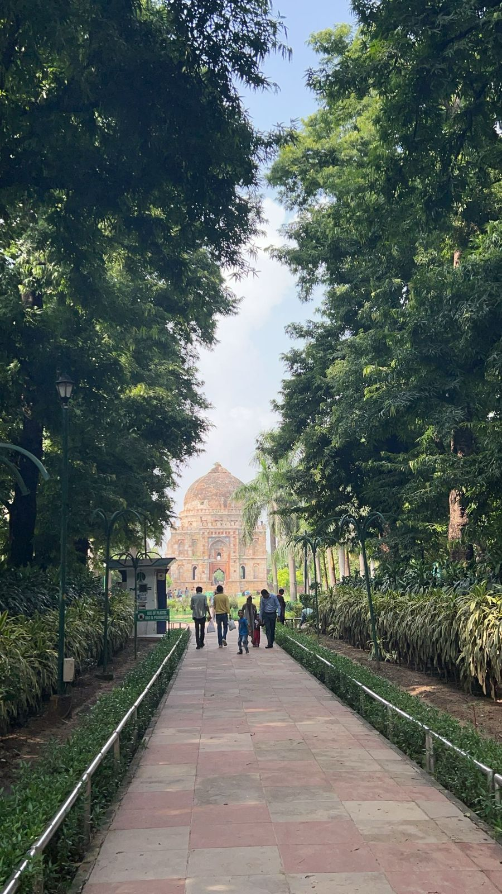

shi_twritings
INSTAGRAM
|
LINKEDIN
|
GOODREADS
Disconnected
CONNECTIONS
Error 404!!!
WiFi loses its signal
In the middle of tech bonanza
Each wire stands drizzled
Malware creeps into the system
The software is in strife
The hardware is still strong
Unfazed by life
Disconnections or disconnected, I muse,
As quietly I sweep, trying to refuse.
Life throws its noise, a chaotic shout,
Still I wonder, what's it all about?

Seeing it
THROUGH
Two roads diverge,
a crowd on the right,
I choose the left,
alone in the night.
intimidating it seems,
facing fears in the light beam.
Short steps I take,
on stones I tread,
A clover's hope within my head.
To let it go, or start anew,
I'll find my way, I'll see it through.
Bleakly
COLOURFUL
into unending darkness
i raced to catch light
loneliness filled the void
compelling me to confront fright
with manes running over edges
and lives crossing ridges
asking me to walk alone
everything here felt strangely known
this place abided tranquility from the chaos of being
life amidst fears seemed the most lively to me
Blurry
DAWNS
incisions deep inside the heart
falling trust tears us apart
amidst shaking promises and beliefs
situations now end up in grief
yelling becomes a part of the day
with blurred visions in dawns we lay
seeking shelters in disrupted hays
overthinking is the price, and so we pay
where are we heading
remains my only question?
is it another problem to be solved?
or yet another lesson to be taught?
whatever be the answer
it's pain wherein we rot
Confused
WAITINGS
in the dancing reigns of love and laughter
an intrusive thought crosses my mind
what if all this is an imagination
set up in broad daylight?
in the melody of a singing child
an absurd feeling fills my eyes
what if this water is fake
like all other promises made that night?
in the poetry of a renowned wordsmith
a gut wrenching pain captures my wise
what if everything i was thinking
was coming from someone not so nice?
with this dilemma
i again sleep tonight
with the hope that
morning suddenly makes everything go right:]
Leaving
MEMORIES
these rustling leaves remind me of you
just as they are happy you were too
this pigmented color of green
is simply the love of red
you did not come home unlike leaves,
who regrow after death.
Dreaming
DREAMS
the sun's up the shore
the heat seems to soothe my soul
light washes over, lifting my heart
healing pain caused by each dart
warmth envelopes keep me drenched
life realigns, getting back on track
a loud blow breaks through the dreamy slack
even in reverie, I fail to act
Subtle
FAREWELLS
you went away so subtly
didn't even look back
I was looking for celebrations to happen
it was prayer, where I lacked
I still remember you everytime
I see someone leave
you helped me get off that pain
it's been years now
and I still can't get off your lane
I still see that house
wondering where did it's light go
I still lurk around that place
waiting for you to return home
waiting for you to return home,
3 a.m.
DEALS
round bodies round it up
shivers fill the growling cup
wooden architectures stick the halls
books line up along the walls
a human figure sits in the middle
with a heart pumping like a fiddle
long breaths snuggle up the lungs
water rolls down those eye lids
there she sits yawning on the ground
waiting for sleep to come around